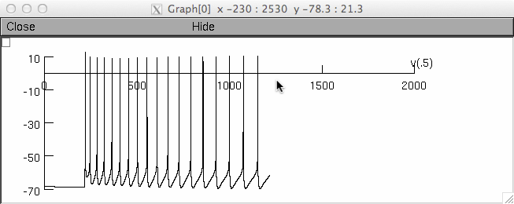

Rhesus Monkey Layer 3 Pyramidal Neurons: Young vs aged PFC (Coskren et al. 2015) README for the models associated with the paper Coskren PJ, Luebke JI, Kabaso BD, Wearne SL, Yadav A, Rumbell T, Hof PR, Weaver CM. Functional consequences of age-related morphologic changes to pyramidal neurons of the rhesus monkey prefrontal cortex. Journal of Computational Neuroscience (2015). These files were contributed by Christina Weaver [christina.weaver at fandm.edu], and run under the NEURON simulation environment. Summary: Layer 3 (L3) pyramidal neurons in the lateral prefrontal cortex (LPFC) of rhesus monkeys exhibit dendritic regression, spine loss and increased action potential (AP) firing rates during normal aging. The relationship between these structural and functional alterations, if any, is unknown. Computational models using the digital reconstructions with Hodgkin-Huxley and AMPA channels allowed us to assess relationships between demonstrated age-related changes and to predict physiological changes that have not yet been tested empirically. Tuning passive parameters for each model predicted significantly higher membrane resistance (Rm) in aged versus young neurons. This Rm increase alone did not account for the empirically observed fI-curves, but coupling these Rm values with subtle differences in morphology and membrane capacitance Cm did. The predicted differences in passive parameters (or other parameters with similar effects) are mathematically plausible, but must be tested empirically. ------------------------------------------------ This model can be run by starting the mosinit.hoc with: nrngui mosinit.hoc or double clicking on the mosinit.hoc file after the mod files have been compiled (nrnivmodl compiles in unix, mknrndll in mswin, mac) The mosinit.hoc file reproduces data from Figure 7 of the paper. To reproduce data from Figure 6 of the paper, see the README in the HHmodel directory. After the simulation starts, if you click the "test firing rate" button at the bottom and click "GO" after a few moments you should see a window like: 